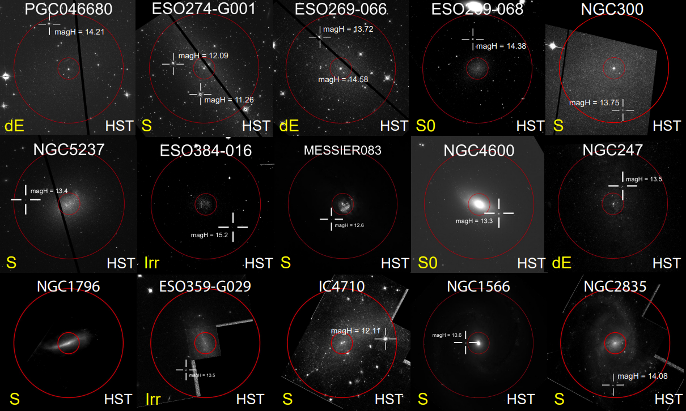
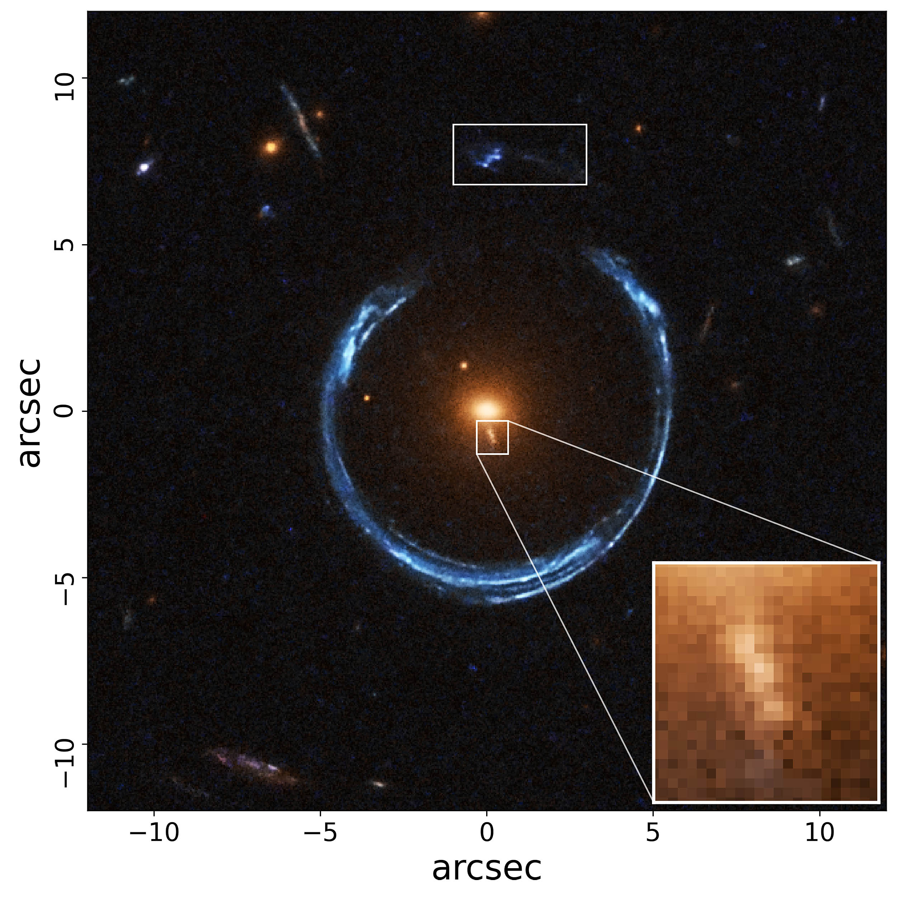
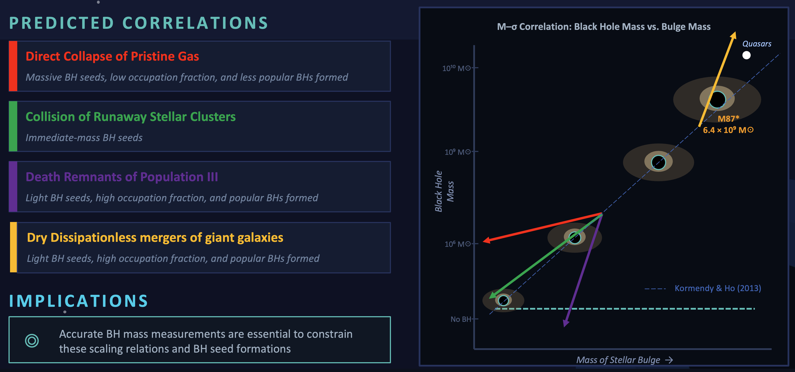

Projects

Active
Searching for Intermediate-mass Black Holes in Nearby Dwarf Galaxies
Black holes with masses between 102 and 105 solar masses
— known as intermediate-mass black holes — are the missing link between stellar-mass and supermassive black holes,
and hold the key to understanding how the first black hole seeds formed in the early Universe and how they grew
to shape the cosmos we observe today.
Learn More

Active
Uncovering the Ultra-massive Black Holes Population in Giant Elliptical Galaxies
Up to the Cosmic Noon
The most massive galaxies in the Universe — giants containing trillions of stars —
are the endpoints of billions of years of cosmic evolution, built through repeated galaxy mergers. Yet how these
extreme systems assembled their stars, black holes, and dark matter remains poorly understood due to their rarity.
Using Keck, VLT, HST, Magellan, and JWST, we are conducting the first systematic study of these cosmic giants to
uncover the secrets of their formation and evolution.
Learn More

Active
Extending Black Hole, Stars, and Galaxy Dynamics Research to the Next Decade with the
39-meter Extremely Large Telescope (ELT)
The ELT, currently under construction in Chile, will revolutionize our ability
to study black holes and galaxies across cosmic time. We are preparing for this next generation of science
by simulating realistic ELT observations — from hunting intermediate-mass black holes in nearby dwarf
galaxies to weighing ultramassive black holes in the most distant giant ellipticals. We are also pioneering
ELT studies of resolved stellar populations and galaxy dynamics out to redshifts z ~ 2–3, pushing the
boundaries of what will be possible in the next decade.
Learn More

Active
From Dwarfs to Giants: Black Hole Scaling Relations Across the Mass Spectrum and Cosmic Time
Black holes and their host galaxies are intimately linked through tight scaling relations, but whether
these relations hold across the full mass spectrum — from intermediate-mass black holes in dwarf galaxies
to ultramassive black holes in giant ellipticals — and how they evolved from cosmic noon to the present
day remains an open question. We measure precise dynamical black hole masses across diverse galaxy
types and environments to map these scaling relations at both the low- and high-mass ends. By tracing their
evolution from z ~ 3 to today, we aim to distinguish between competing models of black hole seed formation
and constrain the co-evolutionary history of black holes and galaxies across cosmic time.
Learn More
Proposals
Observing
Proposal Title
[Under construction]
Learn More